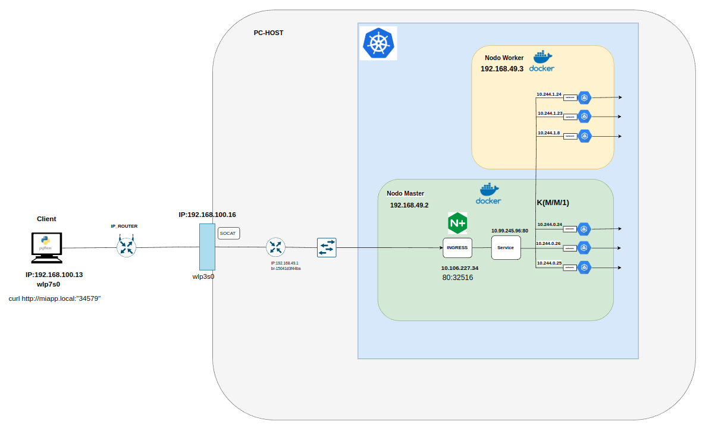

Implementacion del escenario
Diagrama de Red

EL diagrama se puede encontrar en el siguiente enlace:
Uso del Framework WEB FastAPI para la creación del servidor
Se detalla como alojar el servidor que recibira las peticiones desde el cliente, con el se crearan los endpoints para devolver los tiempos de respuesta de cada peticion siguiendo una distribucion exponencial-
Para mas detalles del codigo: script del servidor
requirements.txtDockerfile
# Usamos una imagen base oficial de Python
FROM python:3.11-slim
# Establecemos el directorio de trabajo en la imagen
WORKDIR /app
# Copiamos el archivo requirements.txt (si tienes uno) a la imagen
COPY requirements.txt /app/
# Instalamos las dependencias de Python
RUN pip install --no-cache-dir -r requirements.txt
# Copiamos el código de la aplicación a la imagen
COPY . /app/
# Exponemos el puerto que usa la aplicación FastAPI (por defecto es 8000)
EXPOSE 8000
# Comando para ejecutar la aplicación usando Uvicorn
CMD ["uvicorn", "server:app", "--host", "0.0.0.0", "--port", "8000"]
Dockerizacion del servidor para despliegue en Kubernetes
#Nos ubicamos dentro de la carpeta donde estan los tres archivos antes mencionados
docker build -t "nombre de usuario"/miapp:latest .
docker push "nombre de usuario"/miapp:latest
Despligue del cluster con Minikube
Instalacion de Minikube
curl -LO https://storage.googleapis.com/minikube/releases/latest/minikube-linux-amd64
sudo install minikube-linux-amd64 /usr/local/bin/minikube
Inicialización del cluster
Se activan algunos addons:
minikube addons enable ingress
minikube addons enable metrics-server
minikube addons enable dashboard
#Inicializa el dashboard
minikube dashboard
Una vez iniciado el cluster se procede a deployar los archivos de configuración .yaml:
Kubectl
Instalacion
curl -LO "https://dl.k8s.io/release/$(curl -L -s https://dl.k8s.io/release/stable.txt)/bin/linux/amd64/kubectl"
#Validar binario
curl -LO "https://dl.k8s.io/release/$(curl -L -s https://dl.k8s.io/release/stable.txt)/bin/linux/amd64/kubectl.sha256"
echo "$(cat kubectl.sha256) kubectl" | sha256sum --check
Validar version
Visualiza servicios:
Visualiza PODs:
Muestra el consumo de CPU de los PODs:
Visualizar todo el cluster:
Aplicacion de los archivos de configuracion
Tipos de archivos YAML:
Los implementados en este proyecto:
-
Deployments: Un "Deployment" en Kubernetes es un objeto que permite declarar y gestionar la implementación de aplicaciones en un clúster. Proporciona funcionalidades como estrategias de despliegue, escalabilidad y rollbacks, facilitando la gestión del ciclo de vida de las aplicaciones en entornos contenerizados.
-
Service: Un "Service" en Minikube es como un operador de tráfico para tus aplicaciones en Kubernetes. Le da a tus aplicaciones una dirección fija y fácil de recordar para que puedan comunicarse entre sí sin importar dónde estén ejecutándose. También puede repartir el tráfico entre varias partes de tu aplicación para mantener las cosas equilibradas. En resumen, hace que sea más fácil para las partes de tu aplicación encontrarse y hablar entre sí.
-
Ingress: es un recurso de Kubernetes que proporciona una forma de gestionar y controlar el acceso externo a los servicios que están dentro de un clúster de Kubernetes. A través de Ingress, se definen reglas que permiten redirigir el tráfico de entrada (por ejemplo, HTTP o HTTPS) a los servicios internos del clúster basándose en criterios como la URL, el host, o el puerto.
Uso del comando socat
Se utilizo la herramienta "socat" para que la PC anfitriona física pueda redirigir el tráfico de solicitudes al puerto despecificado como NodePort en el ingress del cluster. Esto se debe hacer ya que el cluster está aislado dentro de la PC anfitriona y nadie desde fuera puede llegar de forma directa. El comando que se utiliza es el siguiente:
#Para ver el puerto del ingress
kubectl get svc -A
socat tcp-listen:"puerto PC Host",bind="IP del Host",reuseaddr,fork tcp4:"Minikube IP":"Puerto ingress"
Configuracion en el cliente:
Luego, en ese archivo se agrega la IP del servidor y el nombre de la app:Generacion de trafico
Para la generacion de trafico por parte de los clientes se empleo un codigo que simula la carga enviando solicitudes HTTP asíncronas a la URL del servidor donde se aloja el cluster y el puerto del mismo, durante un periodo de tiempo determinado. Las solicitudes se generan basadas en una distribucion de tiempos exponencial, simulando el trafico web con tiempos de arribo aleatorios.
Balanceador de cargas
Para gestionar todas las solicitudes entrantes y aprovechar la escalabilidad de la nube, modelamos el balanceador de carga como un sistema de colas M/M/1. En este modelo, la cola tiene capacidad infinita y las solicitudes de tareas llegan de manera individual. Las llegadas de tareas siguen un proceso de Poisson con una tasa λ, lo que significa que los tiempos entre llegadas son independientes y siguen una distribución exponencial con una media de 1/λ. Por otro lado, los tiempos de servicio en el servidor del balanceador de carga también siguen una distribución exponencial, con un parámetro de velocidad μ, donde 1/μ representa el tiempo medio de servicio. En este contexto:
-
La primera "M" representa el proceso de arribo de solicitudes, el cual puede ser controlado mediante el codigo en Python del generador de tráfico, ajustando el tiempo entre llegadas.
-
La segunda "M" corresponde al proceso de servicio, que también sigue una distribución exponencial, determinada por el tiempo de atención de cada solicitud en el script de la aplicación del servidor en python.
Para esta implementación, se emplea una única máquina física (PM) y se asume que la cola en NGINX tiene capacidad infinita, lo que permite analizar el comportamiento del sistema sin restricciones de perdidas en la cola.
Nodos
En esta etapa, el proceso de arribo también se modela con "M", donde la nueva tasa de llegada se calcula dividiendo la tasa de arribo total entre la cantidad de nodos trabajadores (worker nodes). En cuanto al proceso de servicio, se presenta una situación similar a la de NGINX, donde es complicado determinar la distribución exacta que rige este proceso. Esto se debe a que el servicio puede depender de factores que no son fácilmente controlables, como la configuración y el comportamiento del sistema en los nodos trabajadores.
Al definir la capacidad del sistema "C", se aclara que Kubernetes no gestiona colas de tareas, por lo que inicialmente C=1. Aunque esto podría llevar a pérdidas en cada nodo, en la práctica no se observan pérdidas debido al protocolo TCP sobre HTTP, que garantiza la transmisión de tareas a costa de mayor latencia. Esto se logra mediante herramientas como el control de ventana y la retransmisión, lo que puede generar colas tanto en el cliente como en el servidor.
PODs / Servidores
Los pods dentro de un nodo se pueden representar por un modelo de colas M/M/k/k , la primera "M" en notacion de Kendall representa la tasa de arrivo divida por la cantidad de contenedores.
La segunda "M" representa el tiempo de procesamiento del pod definido en la app del servidor FastAPI siguiendo una distribucion exponencial, lo cual es modificable. Con relacion a la cantidad de servidores, se tienen "k" de los mismos representado por la cantidad de pods que pueden atender solicitudes en simultaneo, en este caso son los encargados de procesar las solicitudes de tareas.
Por otro lado, se considero a cada pod como un único servidor, por lo que cada uno puede resolver una solicitud a la vez, las nuevas solicitudes deben esperar en cola hasta que el pod este disponible. Por eso la capacidad maxima de la cola tambien se verá limitada por la cantidad de servidores "k" (pods), entonces si todos los servidores estan procesando solicitudes y se alcanza el limite, las nuevas solicitudes se rechazan o se enrutan hacia otro nodo.